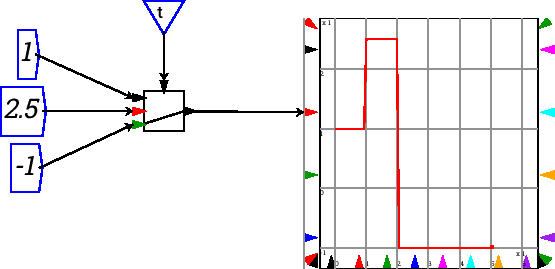

Next: inner product Up: Tensor operations Previous: index
Gather collects the values at index locations indexed by the second argument. The output tensor has the same shape as the second (index) argument.
If the index is not an integer, the gather will linearly interpolate between the values on either side. So .